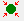

View selected toolbutton.
Overview • User interface • Special tasks ↑ | ↓
Depth cueing helps to see in a two-dimensional graphics of the model which objects are situated in the foreground and which ones in the background. There are several ways to achieve that. Objects can blend into the background color with increasing depth and they can be made more transparent with increasing depth. In Matlab graphics, a combination of both these modes together with a uniform white background works best.
Modern graphics cards allow for more sophisticated and faster hardware-supported depth cueing. Currently, Matlab graphics does not support this feature. Hence, depth cueing in MMM is emulated and a bit slow.
Depth cueing is most useful for detail views of a model although it can also be used for viewing the whole model. To use it for the whole model, unselect all objects, for instance with an unselect * command in the command line or double click on an object in the 3D graphics display. The click the View all toolbutton. If necessary, adjust the view as described in the model panel help page.
To use it for a detail view, select the objects that you want to see, for instance in the hierarchy window, by clicking on the structure in the model window or by the select command. Then click the View selected toolbutton.
Depth cueing is toggled (switched on/off) by clicking on the Depth cueing button in the View panel of the main window or switched on via the Depth cueing item of the Display menu.
A Depth cueing control window opens, the background color of the model panel or model window is switched to white, selection highlights are switched off, and depth cueing is enabled. Objects in the front that could obscure the view are cut away.
Dept cueing is controlled by two planes that are perpendicular to the viewing direction d. Your eyes are at a negative coordinate along d, the background is at a positive coordinate. The Front plane is by default set at d=0, corresponding to the front edge of the selected objects or the whole model. Front edge computation is approximate, small adjustments may be necessary.
You can adjust the Front plane by the corresponding slider or by directly setting a value in the edit field. Note that depth cueing does not automatically update, you have to click the Update button.
All objects closer to you than the front plane are cut away. The front plane also corresponds to fully opaque objects with full color saturation. If the front plane is too close to your eye (large negative values), everything will look very pale.
The Back plane is by default set at d=1.5, corresponding to 1.5 times the extension of the selected objects (or whole model) behind the front plane. This makes sure that the whole selection can still be seen rather clearly. Shifting the backplane to the back (larger values of d) makes more objects visible in the background and the color saturation gradient is decreased. You can shift the back plane with the corresponding slider or by direct input in the edit field.
Click the code>Cancel button of the Depth cueing control window or, alternatively, click once more on the Depth cueing button in the View panel of the main window. The window closes, depth cueing is decativated, and selection highlights- if any- are restored. The previous background color is also restored.